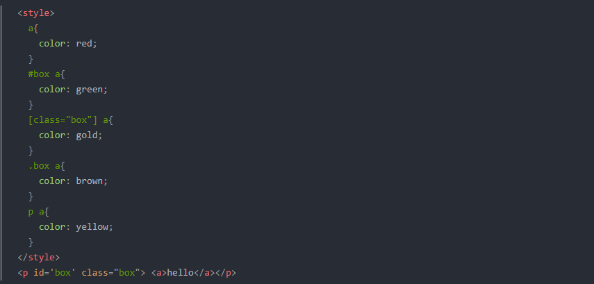

元素占用的空间和元素实际的大小并不相同。块级元素占用一行，盒子的宽度是100%，但实际的宽度却可能是50%。如果此时将margin设置为auto， 那么，浏览器会自动计算margin，是根据盒子剩余的宽度计算，剩余的宽度会平分给左右的margin。 对于浮动元素，占用的空间和其本身的宽高一致。
绝对定位元素和相对定位元素，没有实际占用文档流的空间，所以块级元素依然会挨着上一个普通流元素进行排列
定位方式为relative以及没有定位时，块级元素占一行，盒子宽度为100%；元素宽度100%。绝对定位时，没有指定宽高时盒子的宽高为0，元素宽高为0。
1.选择器相关
选择器理解
1.后代选择器
div p ：选择div元素里面的所有p元素
2.子选择器
div > p : 选择父元素为div的所有p元素
3.同胞选择器
div + p : 选择所有紧跟在div之后的p元素
4.组选择器
div,p : 选择所有的div和p元素
5.共同选择器
div.name : 选择所有类名为name的div元素
此外还有id选择器#id，伪类选择器div:hover，类选择器.name,属性选择器[attribute] [attribute=name]。
:hover 可以选择所有指针位于其上的元素
选择器权重
1.后代选择器
同等级的根据选择器数量来计算权重。权重相同的样式，页内样式大于外联样式，如果同时处于页内或者外联时，先加载的会被后加载的覆盖。
先比较元素优先级，相同时比较权重，权重相同时看位置（是页内样式还是外联样式），位置相同时看加载先后顺序。
题目：
问a的颜色是什么？如果去掉#box a 呢？
2.两种盒模型
【盒子由margin border padding content 组成】ie的盒模型和标准盒模型
ie：盒子的宽高 = content + border + padding
标准：盒子宽高 = content的宽高
也就是说，在ie盒子模型下，指定盒子高度或者宽度之后，如果设置了border和padding，内容的宽度=盒子宽度-两边的border以及padding的宽度。
而对于标准盒子模型，内容的宽高并不会改变，仍然等于盒子的宽高。
box-sizing:border-box ->ie,box-sizing:content-box->标准
3.定位
定位元素位置通过 "left", "top", "right" 以及 "bottom" 属性进行规定。
- absolute:相对最近的指定定位方式的父级元素进行定位。对于绝对定位元素，可以使用top,left;right,bottom指定绝对定位元素与父元素在四个方向的偏移量。 当未指定绝对定位元素宽高时，可通过这四个属性来控制元素的宽高（父元素宽高-偏移量）。当指定元素宽高时，可以用这几个属性设置盒子的大小。可以用这个技巧实现自适应布局以及垂直居中对齐。
- relative:相对自己原来的位置进行定位。
- fixed:相对浏览器进行定位。类似绝对定位。
4.块级元素以及行级元素
- 行级元素：span strong em a del i code (display:inline)
- 块级元素：div p ul li ol form address h1-h6 (display:block) 独占一行
- 行级块元素：img input select button textarea (display:inline-block)
行级元素可以嵌套行级元素，a不可嵌套a元素。块级元素可以嵌套任何元素，p不可以套div
5.margin塌陷和BFC
- 嵌套塌陷:父子嵌套时，父亲的marin-top会受第一个块级元素的margin-top影响，取两者间较大的一个值，子元素的margin并不会体现出来，也就是说子元素的margin-top相当于消失了，而父元素则取两者间较大的margin-top值作为自己的外边距。
- margin合并：兄弟元素。上一个元素的margin-bottom会和下一个元素的margin-top合并为一个，取两者间最大值.
6.浮动
给元素的float属性赋值后，就是脱离文档流，进行左右浮动，紧贴着父元素(默认为body文本区域)的左右边框。float之后，没给定宽度时，float的元素不会独占一行，而是尽可能小 而此浮动元素在文档流空出的位置，由后续的(非浮动)元素填充上去：块级元素直接填充上去，若跟浮动元素的范围发生重叠，浮动元素覆盖块级元素。内联元素：有空隙就插入。 块级元素会忽略浮动元素按照常规流进行放置。当没有足够空间放置浮动元素时，会被自动挤到下面直到可以放置元素的位置。浮动元素会将常规流元素覆盖,但是文本会自动到浮动元素没有覆盖的地方。
浮动元素伪元素
selector:after 必须加上content，默认为行级元素。